因为自己的服务器不小心装了32位系统，导致Minecraft基岩版的服务器没有办法运行，因此就尝试换用 java 版进行联机。但是因为之前已经有基岩版了，所以这次不太想因为换版本再给 mojang 氪金，然后发现offline模式不需要氪金，但是只能进行局域网连接。思考一阵以后觉得反正是用 Linux 建的服务器，那完全可以用 ssh 端口转发的方式把远端服务器加进局域网（实际是加到127.0.0.1），尝试了一下果然成功了！但成功以后发现原来其实offline模式也是可以连私人服务器的。。。anyway记录一下整个过程！
一、服务端搭建（Linux）
在配置之前需要准备一台装有Linux系统的服务器，可以是自己的破旧电脑改装的，也可以是VPS。
1. 建立 java 运行环境
如果是 ubuntu 系统，只需要安装默认的 java runtime environment （java re）即可：
1 | sudo apt install default-jre |
其他 Linux 发行版用各自对应的包管理器安装即可。或者按照 java 的官方网站提供的教程进行安装
2. 下载服务器 jar 文件
可以在这个网站：https://mcversions.net/
找到各个版本的服务端 jar 文件。注意下载的时候要选择“server
jar“。如果在远程服务器上下载，可以复制下载链接以后用
wget、aria2c 等命令行下载器进行下载。
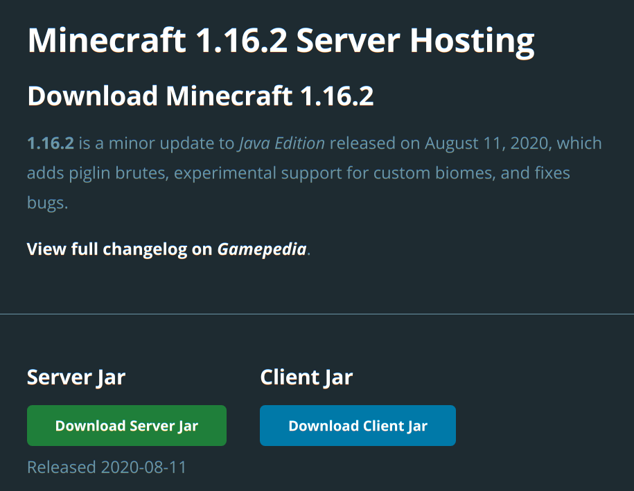
下载后的文件名为”server.jar“
3. 启动服务器
先进入服务器jar文件所在的目录。
第一步是进行初始化：
1 | java -jar server.jar --initSettings |
这步会自动创建初始的 server.properties 配置文件以及协议文件 eula.txt。前者存储的是服务端世界的基本配置，大致如下：
1 | #Minecraft server properties |
如果想要详细的解释可以参考 mc 的 wiki： https://minecraft-zh.gamepedia.com/index.php?title=Server.properties&variant=zh。
后者是使用者需要遵守的一系列规则，看完（直接跳到最后）以后要输入"eula=true"表示同意遵守这些规则。
第二步就是启动服务器了，最后的参数-nogui是不需要跳出图形界面的意思：
1 | java -Xms512M -Xmx1024M -jar server.jar -nogui |
此时如果想关掉终端还能让服务器开着，可以使用 screen 软件。
1 | sudo apt install screen |
安装完成后开启一个给 mc 的 session：
1 | screen -S mc_server # mc_server是这个session的名字，可以自定义 |
在新跳出的窗口中重新运行第二步启动服务器的命令即可。要跳出这个窗口默认的按键是Ctrl+A+D，想再回到这个session对服务器的状态进行查看则需要screen -r mc_server即可。如果想对screen的使用进行个性化配置的话可以自行搜索一下。screen的使用方法这里只介绍三个最常用的：
1 | screen -S session_name # 开起名为session_name的session |
如果想对服务器进行命令交互可以先输入 help
获取帮助，再从中选取自己需要的指令进行交互。例如停止服务器的指令是\stop
4. 进行内网穿透
原理
如果服务器没有公网IP，例如是用家中废旧电脑搭建的服务器，因为是在运营商给的入网点，肯定是内网IP，此时直接靠IP就不能让别人访问到服务器，因此需要进行内网穿透。公网IP是很少的，除了网上租用VPS会给公网IP外，其他渠道连入互联网几乎都是内网IP（平时常见的192.168.x.x的就是路由器给的局域网中的IP）。总之内网IP是不能被外界直接访问的，只有公网IP才可以。
内网穿透的原理就是处于内网中的服务器的一个端口映射到一个公网IP，这样访问那个公网IP的数据都会被转发到服务器的127.0.0.1，相当于直接从127.0.0.1访问服务器了。这个过程需要有一个具有公网IP的主机进行数据的转发才能进行，很幸运已经有提供这样的服务的人了。
使用sakura frp进行内网穿透
sakura frp 提供一定额度的内网穿透流量，而且可以通过每日签到增加流量，如果服务器加入的人不是太多的话，一般都是够用的。首先进入网站主页：https://www.natfrp.com/，注册+登录。
登录进去后发现其实因为有很多人用这个软件都是为了建 Minecraft 的服务器，所以网站已经有现成的为建 MC 服务器而进行内网穿透的教程了，可以选择直接看它的教程。
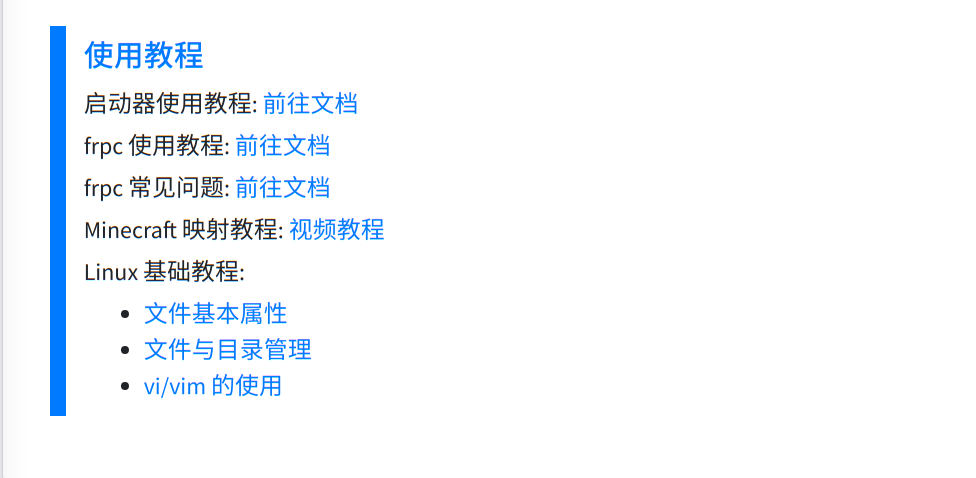
基本思路就是先在左侧列表中 内网穿透 -> 创建隧道 处进行隧道创建。服务器选择只要不是海外的基本都可以（海外的延迟太高了），隧道名称自定义，本地端口填你的 mc 服务器监听的端口，隧道类型要选TCP（和基岩版不一样，基岩版用的是udp方法），本地地址就用默认的127.0.0.1即可，远程端口可以填自己喜欢的，也可以空着自动生成（因为你喜欢的可能基本都被别人先抢了）。
创建完之后会跳出开启隧道的指令，先复制下来即可。然后去 内网穿透 -> 软件下载 处选择适合自己系统（mc 服务器所在的系统）的内网穿透客户端，按照网站主页提供的客户端使用教程开启隧道即可。
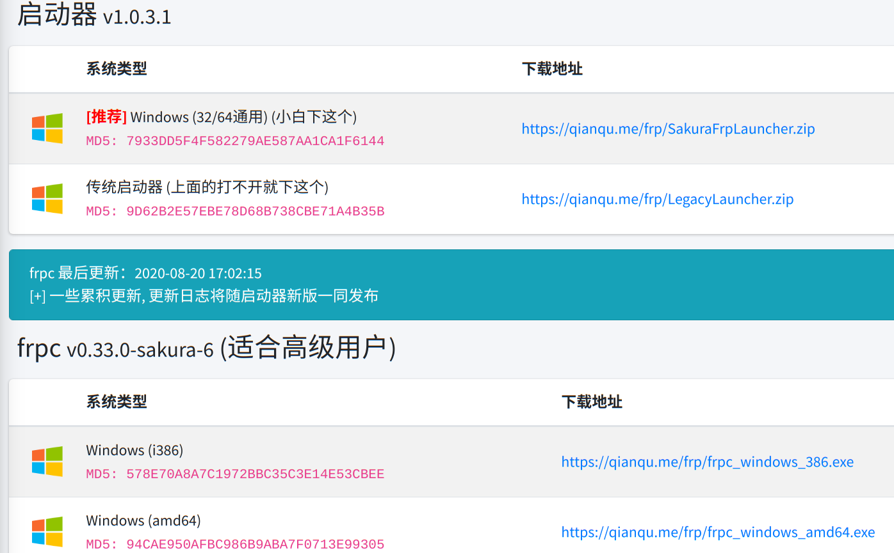
开启隧道后会告诉你公网的ip或者域名，此时用那个ip或域名加上之前填的远程端口的端口号就能对 mc 服务器进行访问。
5. 服务器性能优化（可选）
有些时候可能开服的主机性能不是很好，但是又想和更多的小伙伴一起玩，这个时候为了尽量避免卡顿，就需要对服务器进行优化。
服务器配置优化（server.properties）
- view-distance 一栏表示的是所看的方向加载的 chunk 数量，默认是 10，可以调到 6。如果人比较多甚至可以调到 4。不过调太低会造成远方的地形看不清，可能会影响游戏体验。
- generate-structures 一栏是指是否会加载已经被发现的地牢、神殿等特殊建筑，默认是 true，随着这类建筑发现变多，可能会给服务器带来比较大的负担，因为明明没人在附近却还是要加载。所以可以设置成 false。
- useSMPAPI 一项是是否使用多核，设置为 true
开启多核模式。本项默认是不存在的，因此要自己添加
useSMPAPI=true
JVM 启动参数优化
一组通用参数优化方法：
1 | java -Xms768M -Xmx1024M -XX:+UseG1GC -XX:+ParallelRefProcEnabled -XX:MaxGCPauseMillis=200 -XX:+UnlockExperimentalVMOptions -XX:+DisableExplicitGC -XX:+AlwaysPreTouch -XX:G1NewSizePercent=30 -XX:G1MaxNewSizePercent=40 -XX:G1HeapRegionSize=8M -XX:G1ReservePercent=20 -XX:G1HeapWastePercent=5 -XX:G1MixedGCCountTarget=4 -XX:InitiatingHeapOccupancyPercent=15 -XX:G1MixedGCLiveThresholdPercent=90 -XX:G1RSetUpdatingPauseTimePercent=5 -XX:SurvivorRatio=32 -XX:+PerfDisableSharedMem -XX:MaxTenuringThreshold=1 -Dusing.aikars.flags=https://mcflags.emc.gs -Daikars.new.flags=true -jar paper-x.x.x.jar nogui |
其中-Xms 指最小分配内存，-Xmx
指最大分配内存，这两者根据主机性能不同需要自己设置，其他参数据作者说是在各种主机上都普适的。提出这些参数的原文地址是：https://aikar.co/category/minecraft/。需要更具体的解释可以参考原文。尝试了一下优化效果确实还是很明显的。
使用第三方开发的服务端
选择一：使用 PaperMC 建立服务端
PaperMC也叫PaperSpigot，有对 mc 的服务器进行专门的优化，可以使服务器性能大幅提升。Paper 的说明文档在这里：https://paper.readthedocs.io/en/latest/server/index.html，里面还是有比较详细的说明的。使用 paper 的方式就是先下载 paper 的服务端：https://papermc.io/downloads（paper的版本应该就对应服务端的版本，选择适合自己的版本）。然后直接启动即可：
1 | java -Xms768M -Xmx1024M -jar paper-x.x.x.jar # Xms和Xmx根据自己主机的内存选择 |
如果想继承原来的存档，直接把之前 server.jar 所在文件夹里的全部内容复制到 paper 服务器的目录下即可。不过 paper 对于存档的存储方式和普通的服务器（称之为 Vanilla）有点微差。paper 将地狱（nether）和末地（the end）的内容用额外创建世界的方式进行存储，而原版服务器则是存到 world 文件夹下的 DIM-1 和 DIM1 中。不过从Vanilla 转 paper 的存储方式你无需做任何更改，复制进去以后首次运行 paper 服务器它会自动进行转换。但是如果想从 paper 再转回 Vanilla，则需要找到 world_nether 和 world_the_end 文件夹，分别将里面的 DIM-1， DIM1 文件夹复制到 world 文件夹内。即文件树从上面这个变成下面这个：
1 | +-- world |
1 | +-- world |
除此之外还需要注意的是 paper 服务器默认关闭铁轨复制的特性，如果要打开需要编辑 paper.yml，将里面的 allow-piston-duplication 设置为 true。在复制铁轨的时候你可能会觉得铁轨掉到地上就消失了，其实并没有，只是因为 paper 服务器默认开启了同类物品近距离合并，所以单个的铁轨都被合并到一个物品堆里了，看起来就像消失了一样。
关于paper的其他参数的优化可以看这篇文章，里面有比较详细的介绍。
选择二：使用 fabric 搭建服务端加入优化 MOD
准确来说fabric并不算第三方服务端，只是一个能为server加入 mod 的集成工具链。fabric 搭建服务端可以加入 mod，而有很多 mod 是专门为了优化游戏性能而存在的。
首先需要去 fabric 官网下载 fabric 安装器。官网有给 mc server 建立方法，详情在 https://fabricmc.net/use/?page=server。在写这篇文章的时候，fabric 最新版本是 0.6.1.51，所以下载的方法为：
1 | wget -O fabric-installer-0.6.1.51.jar https://maven.fabricmc.net/net/fabricmc/fabric-installer/0.6.1.51/fabric-installer-0.6.1.51.jar # wget 下载 |
或者使用curl下载：
1 | curl https://maven.fabricmc.net/net/fabricmc/fabric-installer/0.6.1.51/fabric-installer-0.6.1.51.jar -o fabric-installer-0.6.1.51.jar # curl 下载 |
之后用安装器获取用于启动 mc server 的 fabric 启动器：
1 | java -jar fabric-installer-0.6.1.51.jar server -downloadMinecraft |
其中的 -downloadMinecraft 是会自动下载最新的 mc server
的 jar，也即前面步骤中的
server.jar。由于下载速度可能非常慢，因此如果之前已经下好了
server.jar，可以直接去掉这个参数，并把 server.jar
复制到当前目录（fabric installer
所在的目录）。指令完成后应该当前目录应该会多一个
fabric-server-launcher.jar
文件，以后启动服务器的指令就变为：
1 | java -jar fabric-server-launcher.jar |
如果之前已经用前面的方式玩过服务器了，想要继承存档的话只要把之前 server.jar 所在的文件夹的内容都复制到当前目录即可。
接下来就是加装 mod 了。装 mod 的方法很简单，就是把 mod 下载下来放到当前目录的 mods 文件夹里即可。mod 可以在 https://www.curseforge.com/minecraft/mc-mods 中进行搜索下载。在每个 mod 页面点击右上的 Download 即可下载 mod 的 jar 包。
第一个是 lithium，通过优化 mc 的内部模块运行效率达到降低 mspt 的目的，从而使游戏更流畅。链接为：https://www.curseforge.com/minecraft/mc-mods/lithium。
第二个是 phosphor，作用是通过优化光照来降低卡顿，链接为：https://www.curseforge.com/minecraft/mc-mods/phosphor
装载 mod 的时候需要注意的一点是有些 mod 可能还没跟上版本更新，所以下载前先看一眼 mod 的描述中支持的版本，否则可能会造成服务端无法运行的错误。
将 mod 的 jar 包放入当前目录的 mods 文件夹中即可重启服务器了。
推荐
从我本身的体验上来看，似乎 fabric 这种方法不一定能提供加速，因为加装 mod 会要求额外的内存空间，对于内存比较吃紧的主机来说，加速 mod 反而可能是个负担。我的主机是 32 位 2 核 CPU，2G内存，用了 fabric 之后感觉反而有点减速，而 PaperMC 的确是有比较好的加速效果，所以还是比较推荐用 PaperMC 来做服务端的优化，
二、客户端连接
0. 安装 Java RE 环境
对于 Linux 的用户，可以按照服务端搭建介绍中的方法安装 Java RE 环境。
对于 Windows 用户，进入 java 8 的官方网站，点击java download
之后直接拉到网页底部，注意不要点直接下载，而是点击 See all java downloads。因为直接下载的话可能根据浏览器的版本给你下载 32-bit 的 java。而 mc 用 64-bit 的会更好一点。
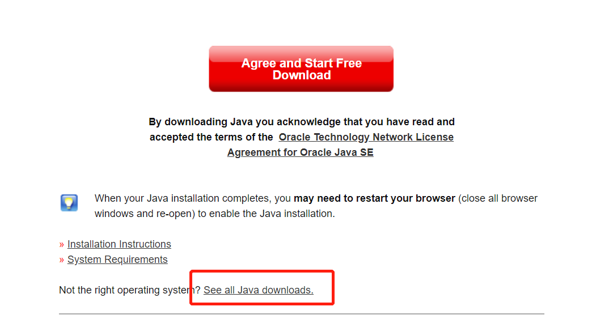
之后找到 windows 的部分，点击 64-bit 的版本进行下载，按照安装器的指引进行安装即可。
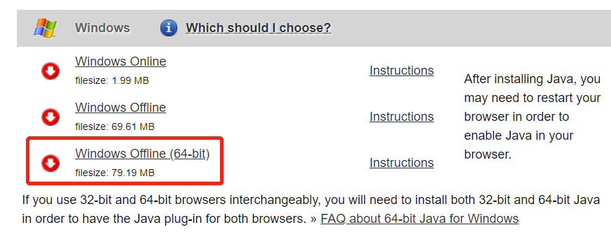
1. 安装启动器：HMCL
HMCL（Hello Minecraft Launcher）是第三方的 MC Java 版启动器，因为版本管理+登录一应具全，而且界面比较美观，没有内置广告，所以使用体验较好。用别的启动器只要能进入游戏也是可以的。
HMCL再官方的github上进行下载：https://github.com/huanghongxun/HMCL/releases 。
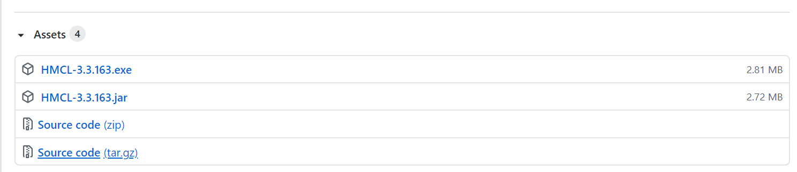
windows 用户点击 exe
文件下载即可，下载后双击即可运行。Linux 用户可以选择
jar 文件后用 java -jar HMCL-x.x.xxx.jar
打开，也可以用自己的包管理器直接安装。例如我使用 Manjaro 发行版，再
archlinux 库中有官方的 HMCL 启动器，我使用的包管理器是
yay，直接 yay hmcl 即可。
2. 安装游戏本体
打开启动器后首先跳出创建用户的页面，选择离线模式，输入你喜欢的用户名即可。这个用户名之后在加入服务器进行游戏的时候会显示出来。当然，如果已经给 mojang 氪过金了，有持有 MC java 版的 mojang 账号，直接登录也是可以的。
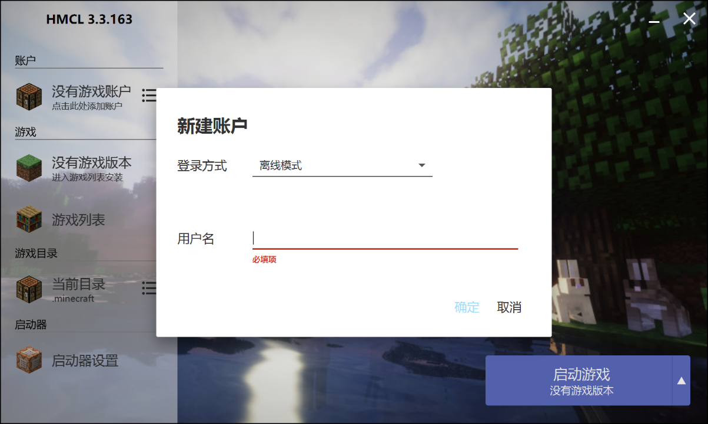
之后点击最上方工具栏中的安装新游戏版本进行游戏本体的安装，选择和服务器一样的版本。
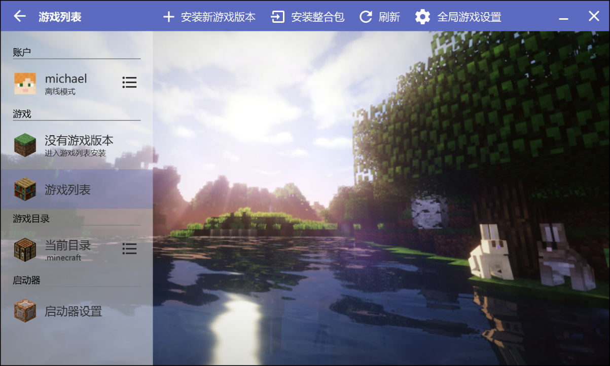
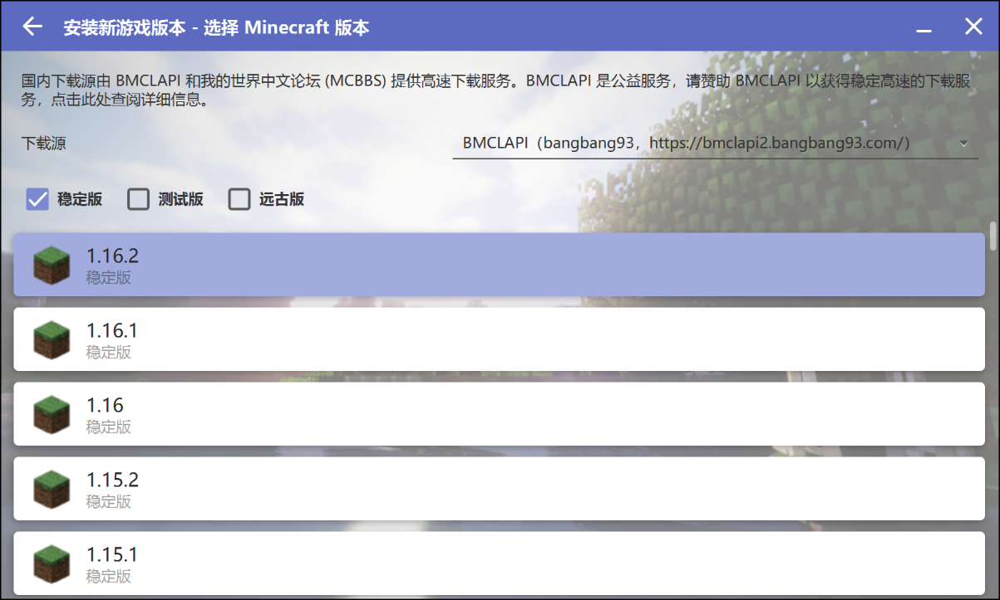
下面这个界面应该是装一些插件的，没有需求的话都不安装即可。点击安装以后会自动进行相关文件的下载和安装，慢慢等待安装完成。
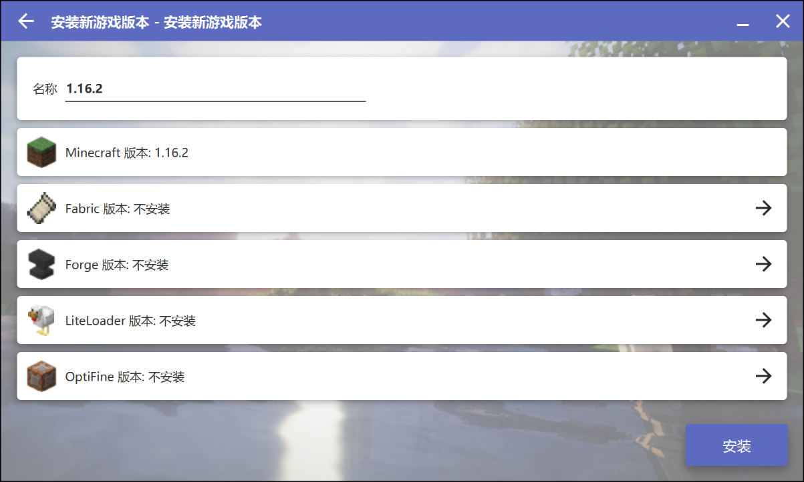
安装完成后到游戏列表界面，点击测试游戏，待成功加载之后，下次启动就可以直接用右下角的开始游戏了：
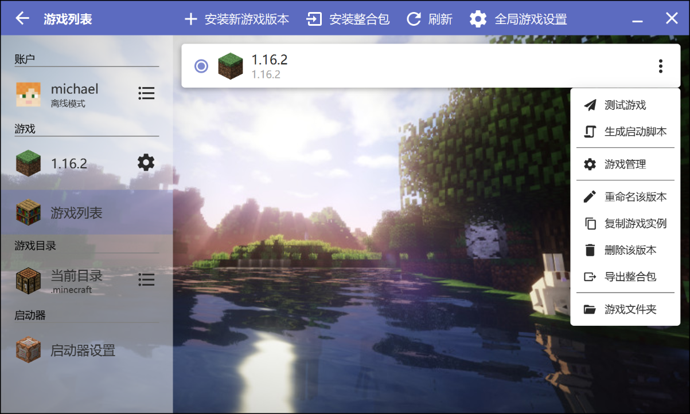
如果过程中出现无法下载的错误，一是在启动器设置里检查自己的java版本是否是64-bit的，二是把下载源换成官方的下载源：
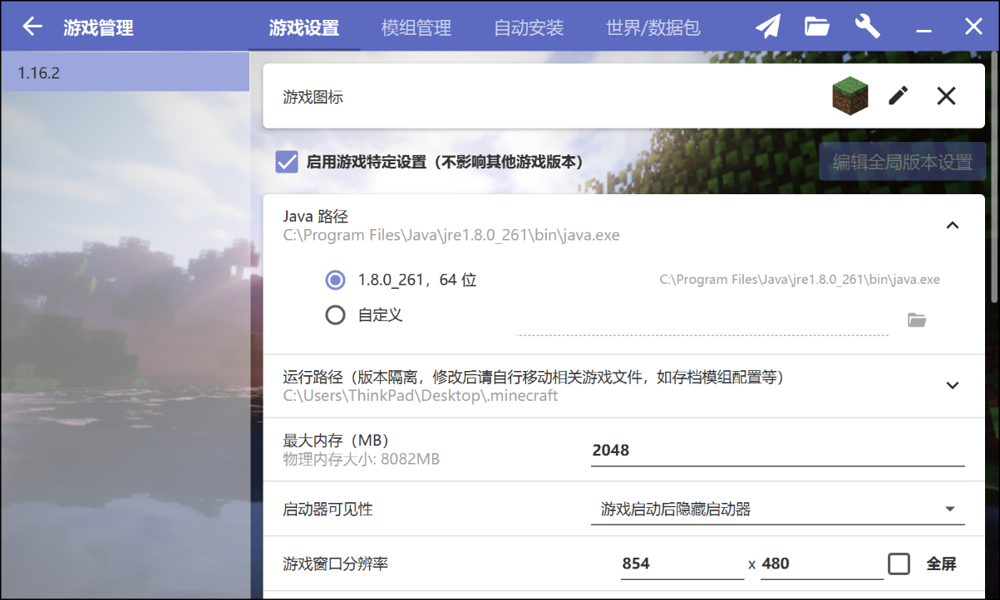
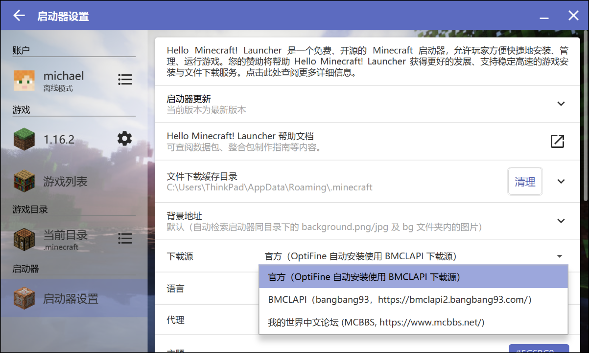
注意如果想把 hmcl.exe 移到别的地方，需要把同级目录下的 hmcl.json 和 .minecraft 文件夹同时移出，前者是 hmcl 的配置文件，后者装的是游戏本体文件。
3. 连接服务器
直接连接私人服务器
先进入 Multiplayer 界面：
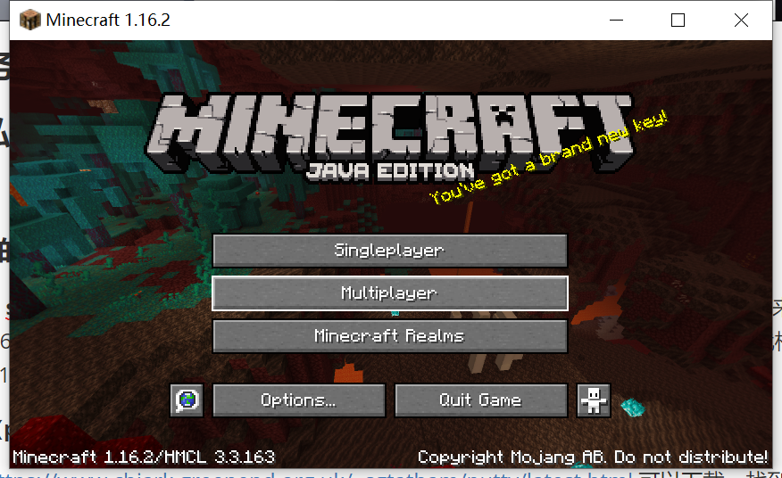
然后点击 add server：
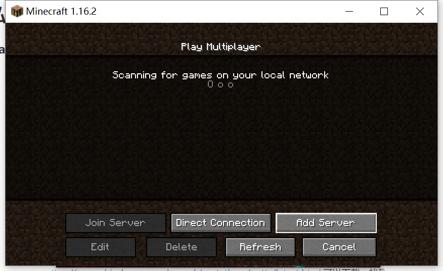
Server Name 中填写的是你给这个服务器取的名字，可以自定义，Server Address 的格式是 IP:端口 。如果端口是默认的 25565 的话可以省略。IP 可以是网址，也可以是直接的Ipv4地址。
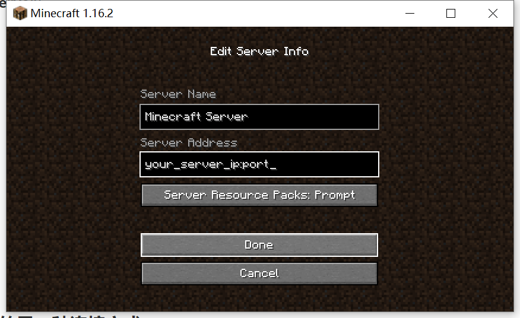
点击Done之后稍稍等待一下刷新就可以进服务器了！
这里需要注意的是如果朋友中有人是offline模式进入服务器的话，服务端需要在 server.properties 里将 online-mode 设置成 false。这个选项是是否检查连入的人持有mojang账号，offline模式是没有登录的，所以自然没有mojang账号。
offline 模式的另一种连接方式
原理是先用一个 ssh 软件进行端口转发，把本地的某个端口（例如25565）和服务端的端口连接起来（服务器默认端口号是 25565，在server.properties里可以查看），这样向本地的 25565 端口收发消息，就相当于是从服务端的 127.0.0.1 收发消息，相当于把服务端加入了局域网。
需要先在服务端为想连入的人创建一个统一的linux新用户：
1 | sudo useradd -m mc # mc 为用户名，可以自定义 |
下载 ssh 软件（putty）
最新的版本在 https://www.chiark.greenend.org.uk/~sgtatham/putty/latest.html 可以下载，找到 putty.exe，根据自己的电脑选择 64-bit 或 32-bit 版本（一般电脑都是 64-bit 的）下载。
开启软件后输入linux服务端的ip和端口。
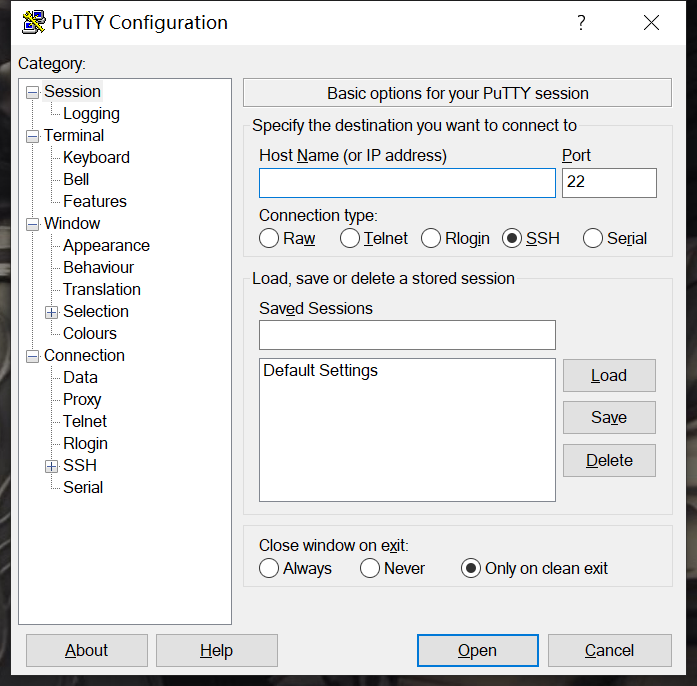
然后再 SSH->Tunnels
中MC的server运行的端口，然后点Open开启这个session，输入服务端给的用户名和密码即可。这样就完成的端口转发。如果再Linux上的话用
ssh 指令即可完成，不需要多下载别的程序。
之后的过程和前面的连接服务器的方式大致相同，不同点在于此时可以直接在 local network 中搜索到服务端，如果要通过ip连接的话，需要用 127.0.0.1 而不是服务端的 ip。